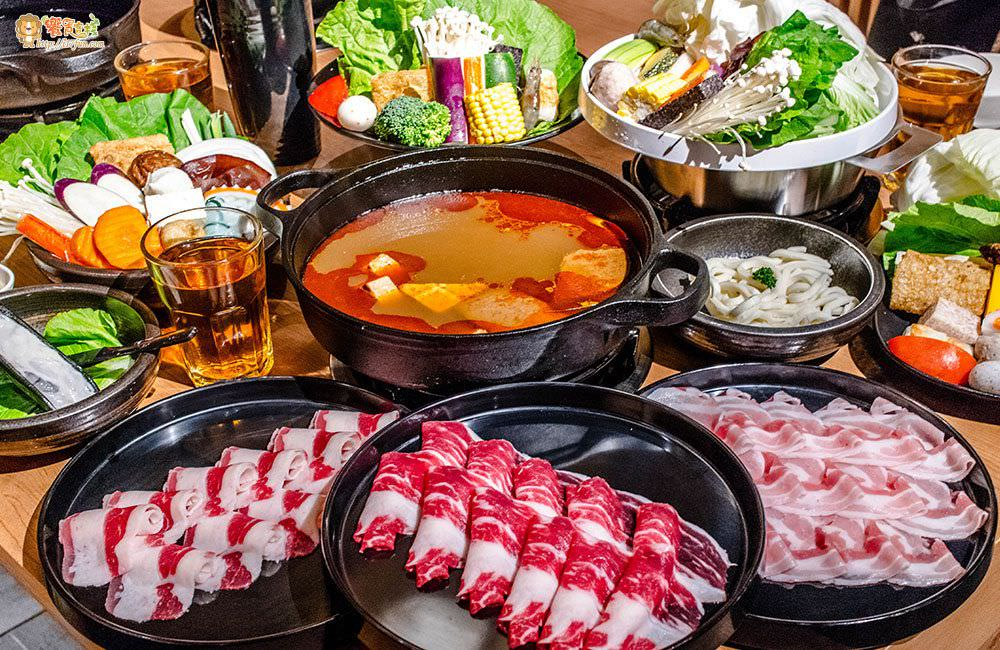
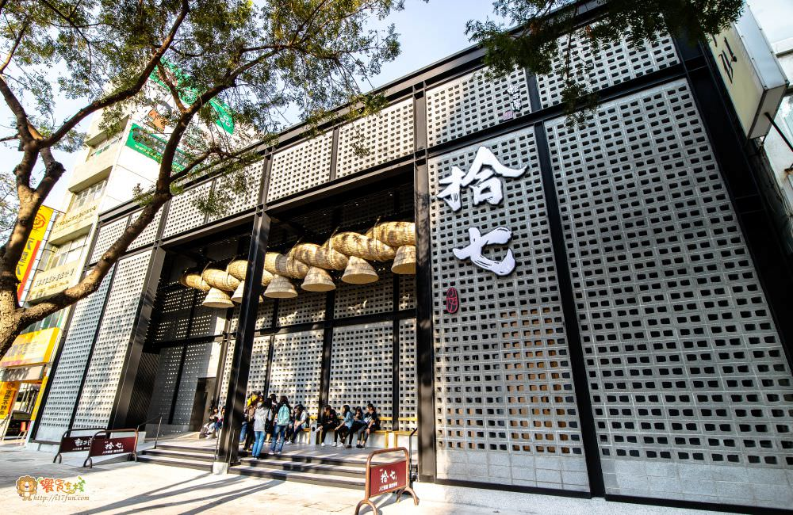
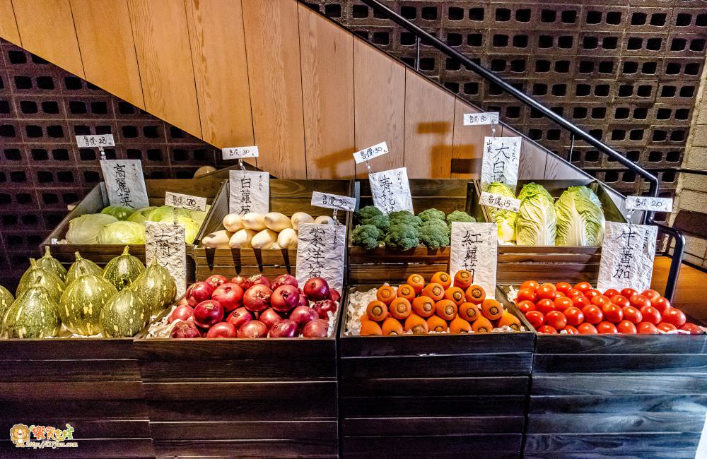

外來自台中的(輕井澤)旗下
而繼茶六之後，
12/1起將三多商圈的輕井澤與拾七結合喬遷到新掘江商圈
在台中熱度相當高的拾七石頭火鍋終於進駐高雄啦，
新掘江商圈一帶，搭著捷運到R9中央公園站步行只要3分鐘，是冬季火鍋的新選擇

拾七石頭火鍋傳承了井輕澤氣派的裝潢，高挑呈現出氣勢，路過、經過絕對不難發現拾七的存在。
下午三點多來訪，門口還是不少人在排隊，更讓肥獅子期待起這拾七的鍋物
拾七石頭火鍋除了有鍋物外，也有提供新鮮的蔬果。；
醬料區，有沙茶醬、日式醬油、青蔥、白蘿蔔泥、辣椒切片、蒜泥及純釀白醋。
拾七的菜單，除了保留了輕井澤原有的四川麻辣鍋、壽喜燒、和風燒鍋之外，更多了石頭火鍋系列，而不管您是海鮮控還是肉肉控，拾七通通能滿足，雞肉、牛肉、豬肉、各式新鮮肥美的海鮮通通都有。
甘甜的壽燒鍋透過熬煮，食材完會吸收了醬汁的甘甜，吃起來超級美味

，這壽喜燒鍋越煮越濃、越煮越醇，
食材吸足醬汁後，即使不沾醬也好吃
培根豬肉帶點油脂，咀嚼起來軟嫩、不柴口，吸足醬汁讓人一口接著一口吃停啊
附上飲用水、壽喜醬汁、七味粉，可以依自己的口味調整湯頭的濃淡度啊
拾七的菜盤非常的用心，點不同的鍋物菜盤都會有點小不同，菜色非常的豐富膳